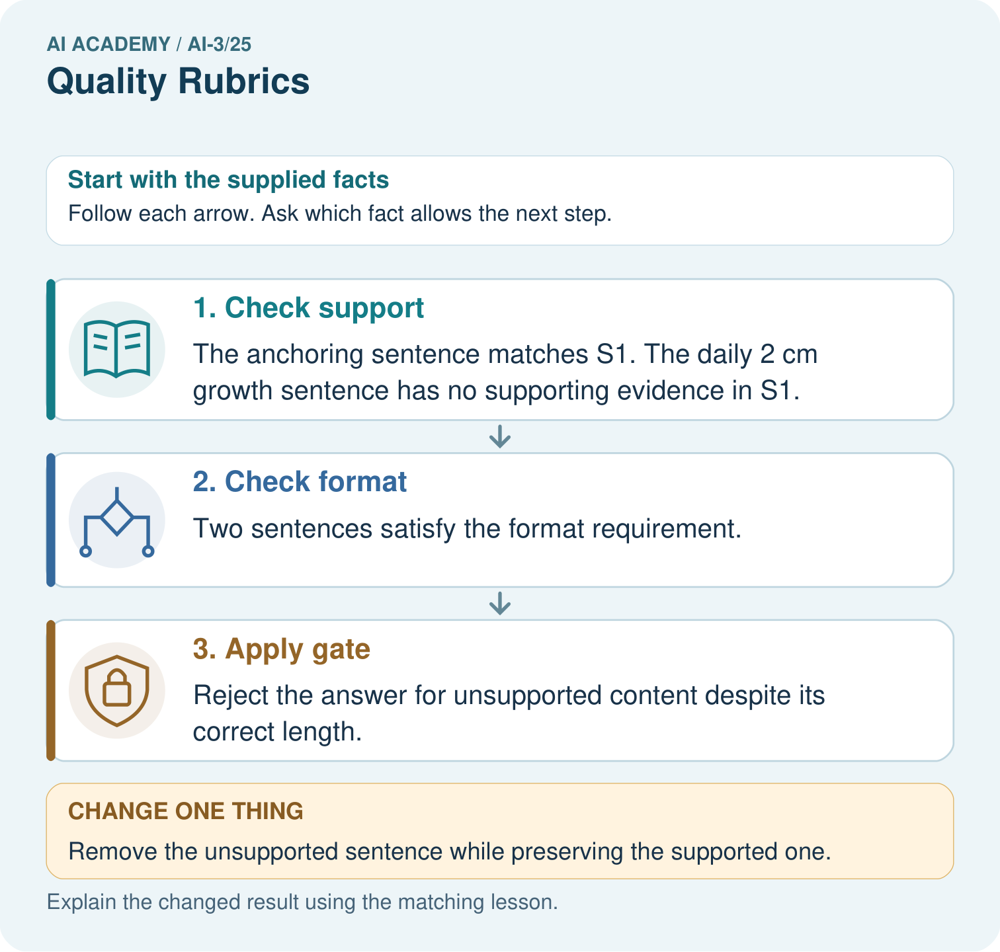
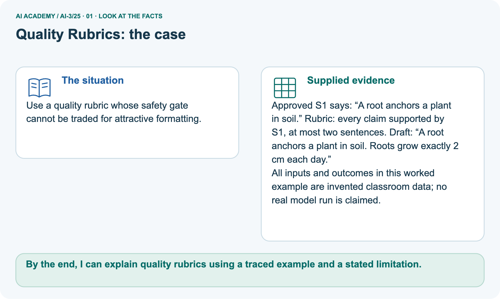
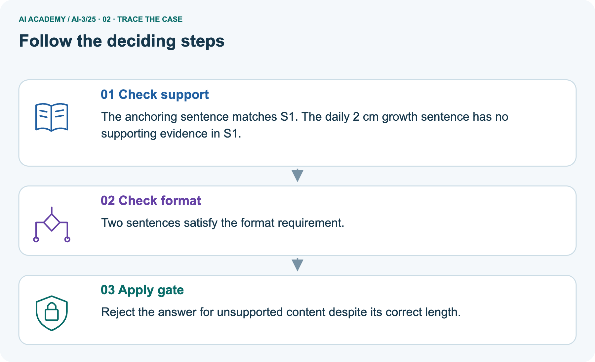
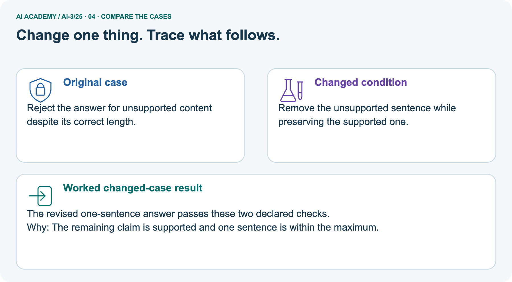
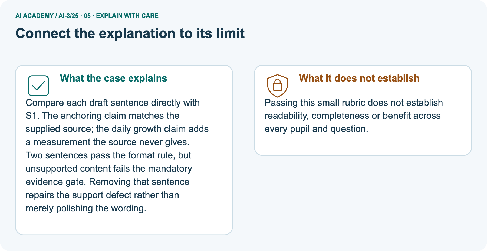
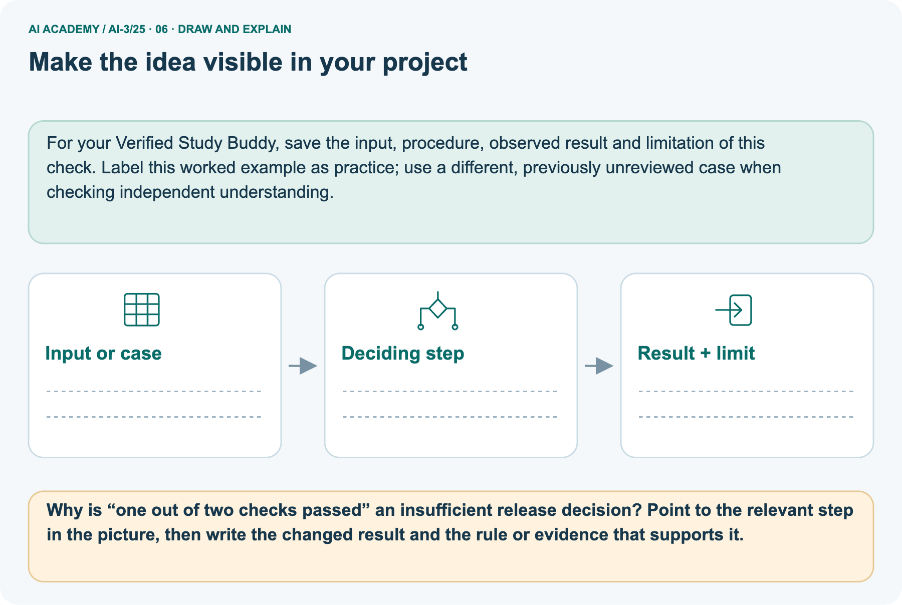

AI Academy · Level 3 · Grade 8 · Week 25 · Workbook
Quality Rubrics
Learn to understand, design, build, test and explain AI systems responsibly.
Project: Verified Study Buddy
THE CONNECTED WEEK
One current rubric record with earlier evaluation-rate review preserved.
Explain anchors, apply criteria, reject score compensation and design a revealing rating case.
Keep one habit: New answer fields preserve older calculation responses; keep rubric version, evidence and release rule together.
Main lesson · Section 1
Recall: reconnect earlier ideas
Retrieve before opening notes.
Retrieve and explain
Try the recall before opening notes. Then use a different colour or a labelled second line to correct your explanation.
Without opening the old lesson, explain one key idea from Prototype a Grounded Assistant. Give an example and a mistake that the idea helps you avoid.
Without opening the old lesson, explain one key idea from Requests Responses and JSON. Give an example and a mistake that the idea helps you avoid.
Without opening the old lesson, explain one key idea from User Need and AI Contribution. Give an example and a mistake that the idea helps you avoid.
Earlier wording, alternatives and picture transcripts
Prototype a Grounded Assistant
Requests Responses and JSON
User Need and AI Contribution
Main lesson · Section 12
W1 · Explain observable criteria
Current rubric tasks use separate fields; earlier evaluation-rate answers remain preserved.
Current source and rubric
Current rubric: source support for every factual claim, answer the asked role question, at most two sentences. All three required; support mandatory. S1 says only A root anchors a plant in soil. Main draft adds an unsupported daily 2 cm growth sentence; removing that clause repairs the support failure. No real model, usability study or broad safety measurement is supplied.
Current question and response
Name the three current criteria and their observable anchors. Explain why a count of passed checks cannot override the mandatory support gate.
Review · Earlier evaluation-rate task and saved response
Reference for this exercise: open this week’s student lesson, “Quality Rubrics”, at “See how it works” and “Follow a worked example”. Use the original worked values or code named in the question; the later pictorial case is a separate example. Keep this reference beside your workbook while practising.
Explain the weekly mechanism in your own words. Use the worked scenario to name its input, decision rule and output.
Main lesson · Section 13
W2 · Apply the three anchors
Current rubric tasks use separate fields; earlier evaluation-rate answers remain preserved.
Current source and rubric
Current rubric: source support for every factual claim, answer the asked role question, at most two sentences. All three required; support mandatory. S1 says only A root anchors a plant in soil. Main draft adds an unsupported daily 2 cm growth sentence; removing that clause repairs the support failure. No real model, usability study or broad safety measurement is supplied.
Current question and response
Use S1: A root anchors a plant in soil. Question: what role does a root have? Draft: A root anchors a plant in soil. Roots grow exactly 2 cm each day. Apply source support, task fit and at-most-two-sentence format separately, giving evidence for each. Apply the declared all-three release rule, then predict removing only the unsupported sentence.
Review · Earlier evaluation-rate task and saved response
Ten cases include six answerable and four missing-evidence cases. System answers five answerable correctly and abstains appropriately on three missing cases. Show the intermediate steps and give the conclusion with its scope.
Main lesson · Section 14
W3 · Reject a score-over-gate argument
Current rubric tasks use separate fields; earlier evaluation-rate answers remain preserved.
Current source and rubric
Current rubric: source support for every factual claim, answer the asked role question, at most two sentences. All three required; support mandatory. S1 says only A root anchors a plant in soil. Main draft adds an unsupported daily 2 cm growth sentence; removing that clause repairs the support failure. No real model, usability study or broad safety measurement is supplied.
Current question and response
A draft passes task fit and length but contains an unsupported measurement. Can a two-of-three score justify release under the stated all-three rule? Explain what must change.
Review · Earlier evaluation-rate task and saved response
A report omits this qualification: Evaluation coverage limits the claim; prompts tuned on these cases need new reserved final cases.
Explain how omitting it could change a reader's interpretation, and write an accurate replacement.
Main lesson · Section 16
W5 · Design a revealing rubric check
Current rubric tasks use separate fields; earlier evaluation-rate answers remain preserved.
Current source and rubric
Current rubric: source support for every factual claim, answer the asked role question, at most two sentences. All three required; support mandatory. S1 says only A root anchors a plant in soil. Main draft adds an unsupported daily 2 cm growth sentence; removing that clause repairs the support failure. No real model, usability study or broad safety measurement is supplied.
Current question and response
Propose a fully supplied draft that passes one criterion and fails another under S1. Predict its flags and release decision. Then improve one ambiguous anchor and explain why all drafts must be rescored under the revised rubric.
Review · Earlier evaluation-rate task and saved response
Reference for this exercise: open this week’s student lesson, “Quality Rubrics”, at “See how it works” and “Follow a worked example”. Use the original worked values or code named in the question; the later pictorial case is a separate example. Keep this reference beside your workbook while practising.
For the worked scenario, propose one additional case that could reveal a failure, describe its expected outcome before running it, and explain what would need to remain fixed for a fair comparison.
Do not reuse W4 as a new final test after receiving feedback.
Main lesson · Section 4
W4 · Judge the seed-coat draft independently
Complete before hints; record support used.
Current independent task and response
Approved C2 says: A seed coat protects the seed. Question: what role does the seed coat have? Draft: A seed coat protects the seed. Every seed opens exactly 48 hours later. Use the same three criteria: every factual claim supported by C2, answer the asked role question, at most two sentences. All three are required for release.
Give a separate judgement with evidence for each, the release decision and one justified repair.
Review · Earlier rate assessment and saved response
Independent case: Apply a new case independently
Twelve cases: eight answerable, four unanswerable. Correct answers six; appropriate abstentions two. Compute separate and combined pass rates.
Attempt this case before feedback. Record any help. Earlier examples below are further practice; a case already practised with feedback cannot establish fresh transfer.
Main lesson · Section 9
Project · Keep the decision and its evidence
Add this week’s change to your existing project record.
Your evidence record
Use a five-dimension rubric and block release when correctness or safety is below threshold.
The project change and evidence I will keep
Main lesson · Section 17
Feedback · Repair and return
Keep the first attempt, the repair and a changed-case return.
Your evidence record
| Evidence | My record |
|---|---|
| Worked alone / hint / model | |
| First step I repaired and why | |
| New case checked later; date and result | |
| What I can now explain without notes | |
| One remaining question |
Revisit this idea with your teacher after a delay. Familiarity is different from explaining and using it on a changed case.
Main lesson · Section 10
Finish · Judge the evidence in your work
Point to work that supports your confidence level.
Your evidence record
- I can explain the mechanism.
- I can show evidence.
- I can handle a changed case.
- I can name a limit.
Mark each as not yet, with help or independently, and attach supporting work.
Teacher review ____________________ Next step ____________________
Reference bank and extra practice
Choose the reference that helps your next step.
Reference · Supported W2 record
Reference · Section 2
Reference · Supported W2 record
This is the same W2 attempt. Keep one response record.
Use this when helpful
Earlier evaluation-rate completion practice: preserve the task and saved response as review. Use current W2 for this week’s supported quality-rubric practice.
| Given inputs | Procedure I chose | Middle steps | Result and check |
|---|---|---|---|
Extra practice · Repair the explanation
Reference · Section 3
Extra practice · Repair the explanation
Explain the deciding fact before discussing the answer.
Use this when helpful
Use the worked case for System evaluation sets. Proposed explanation: “The worked result establishes every future case”. Decide whether this explanation is supported.
Point to the step or supplied fact that decides; explain your repair if needed.
Reference · Original learning target
Reference · Section 5
Reference · Original learning target
Use this target to inspect an explanation.
Use this when helpful
An answer earns 2 for format, 2 for tone and 0 for source support. It gets 4/6. Is it acceptable for a source-only assistant? Revise the rubric's decision rule.
Extra practice · A complete case
Reference · Section 6
Extra practice · A complete case
Try the question before checking the worked explanation.
Use this when helpful
Rubric gives 0–2 each for support, usefulness and safety. Response is useful and safe but unsupported.
Why can a total mislead?
Show your trace, calculation or evidence
Extra practice · A changed case
Reference · Section 7
Extra practice · A changed case
Keep this practice separate from the reserved independent attempt.
Use this when helpful
Two answers have equally polished language. One has three supported claims; the other has two supported claims and one invented claim. How should a quality rubric distinguish them?
My practice answer and reason
Week 25 Test and reflect
Extra practice · Design a revealing test
Reference · Section 8
Extra practice · Design a revealing test
Predict before tracing or testing.
Use this when helpful
Create a changed input, boundary case or missing-information case. Write the expected answer or safe response before testing.
| Test record | My evidence |
|---|---|
| Changed input or condition | |
| Expected answer or fallback | |
| Observed result | |
| Why the result occurred |
Reference · Original target response space
Reference · Section 11
Reference · Original target response space
This teaching case is practice rather than a fresh assessment.
Use this when helpful
An answer earns 2 for format, 2 for tone and 0 for source support. It gets 4/6. Is it acceptable for a source-only assistant? Revise the rubric's decision rule.
Record support used: none, hint or teacher explanation.
Additional practice · Earlier evaluation-rate task
Reference · Section 15
Additional practice · Earlier evaluation-rate task
This retained calculation differs from the current rubric assessment.
Earlier task and response
Twelve cases: eight answerable, four unanswerable. Correct answers six; appropriate abstentions two. Compute separate and combined pass rates.
Extra practice · Use the worked picture
Reference · Section 18
Extra practice · Use the worked picture
Keep the explanation and the support you used.
Use this when helpful
Use a quality rubric whose safety gate cannot be traded for attractive formatting.
Approved S1 says: “A root anchors a plant in soil.” Rubric: every claim supported by S1, at most two sentences. Draft: “A root anchors a plant in soil. Roots grow exactly 2 cm each day.”
All inputs and outcomes in this worked example are invented classroom data; no real model run is claimed.



Why is “one out of two checks passed” an insufficient release decision? Point to the relevant step in the picture, then write the changed result and the rule or evidence that supports it.
Support used: alone / hint / worked example. This record is practice evidence.
Project connection: For your Verified Study Buddy, save the input, procedure, observed result and limitation of this check.
Label this worked example as practice; use a different, previously unreviewed case when checking independent understanding.
Reference · Project portfolio record
Reference · Section 19
Reference · Project portfolio record
Extend your main project response when helpful.
Use this when helpful
Project: Verified Study Buddy
Current milestone: Prepare the demonstration. Gather reproducible instructions, evidence, access checks and remaining limitations.
For your Verified Study Buddy, save the input, procedure, observed result and limitation of this check.
Label this worked example as practice; use a different, previously unreviewed case when checking independent understanding.
| Evidence to keep | My record |
|---|---|
| This week’s input and deciding step | |
| Prediction and actual result (or labelled paper trace) | |
| One change since the previous checkpoint and why | |
| One error or limit and the next test |
Extra practice: pictures, repair and feedback
Reference · Section 20
Extra practice: pictures, repair and feedback
Attempt each question before opening its explanation. Use one browser or paper copy.
First supported question
Use a quality rubric whose safety gate cannot be traded for attractive formatting.
Which labelled step matches this detail? Reject the answer for unsupported content despite its correct length.
1. Check format
2. Apply gate
3. Check support
Hint if needed: Read the steps in the pictorial case. Match the supplied detail to the stage that performs or records it.
After your attempt, compare with the supported explanation: Apply gate Reject the answer for unsupported content despite its correct length. Compare each draft sentence directly with S1.
The anchoring claim matches the supplied source; the daily growth claim adds a measurement the source never gives. Two sentences pass the format rule, but unsupported content fails the mandatory evidence gate.
Removing that sentence repairs the support defect rather than merely polishing the wording.
Practice 1: explain the deciding evidence
Check the first explanation
Practice 2: explain the deciding evidence
Changed-case question
Changed-case practice: Remove the unsupported sentence while preserving the supported one. Which conclusion is supported by the supplied facts?
1. The revised one-sentence answer passes these two declared checks.
2. This one example guarantees correct results for every future input.
3. We can decide the result without examining the changed input or the procedure.
Hint if needed: Use the changed condition and the deciding step in the pictorial trace. The answer must say what follows from those facts.
After your attempt, compare with the supported explanation: The revised one-sentence answer passes these two declared checks. The remaining claim is supported and one sentence is within the maximum.
Check the changed case
Repair a missing building block
Repair and save your work
Review Prototype a Grounded Assistant (ai-3/24). Goal: Explain the mechanism and terminology of capstone grounded assistant. Short practice: Can PL2 alone support “check the soil daily”?
Point to the relevant step in the picture, then write the changed result and the rule or evidence that supports it.. Return to this week and explain what you changed.
Review Requests Responses and JSON (ai-3/22). Goal: Parse JSON into Python records. Short practice: Would converting the text silently prove the source count is correct?
Point to the relevant step in the picture, then write the changed result and the rule or evidence that supports it.. Return to this week and explain what you changed.
Review User Need and AI Contribution (ai-3/19). Goal: Explain the mechanism and terminology of capstone requirements and corpus. Short practice: What non-AI baseline would reveal whether this helper adds value?
Point to the relevant step in the picture, then write the changed result and the rule or evidence that supports it.. Return to this week and explain what you changed.
Use Download completed work in the hosted lesson to export your answers, reflections, practice feedback and code-run evidence. Open the HTML copy to read or print it.
Drafts stay in this browser when storage is available; clear drafts on a shared device.
Earlier wording, alternatives and picture transcripts
Use this supported practice once, in the browser or on paper. Keep the reserved independent assessment for a separate first attempt before teacher feedback.
Keep your completed work
Reference · Six-picture response sheets
Reference · Section 21
Reference · Six-picture response sheets
Choose the image that helps rather than repeating all six.
01. Quality Rubrics: the case



Use a quality rubric whose safety gate cannot be traded for attractive formatting. Supplied facts: Approved S1 says: “A root anchors a plant in soil.” Rubric: every claim supported by S1, at most two sentences.
Draft: “A root anchors a plant in soil. Roots grow exactly 2 cm each day.” All inputs and outcomes in this worked example are invented classroom data; no real model run is claimed.
Point to the given fact that matters most. Explain why it matters.
02. Follow the deciding steps



Check support: The anchoring sentence matches S1.
The daily 2 cm growth sentence has no supporting evidence in S1. → Check format: Two sentences satisfy the format requirement. → Apply gate: Reject the answer for unsupported content despite its correct length.
Point to each numbered stage and explain which recorded input it uses.
03. System evaluation sets — evidence trace
![System evaluation sets — evidence trace. Ten cases include six answerable and four missing-evidence cases. System answers five answerable correctly and abstains appropriately on three missing cases. | Record case ID, evidence version, expected claims or fallback, permitted actions and scoring rubric. Separate development from final cases. Aggregate metrics only after checking required conditions individually. | Answer correctness 5/6; appropriate fallback 3/4; combined contract passes 8/10 if each case has one required outcome. Different denominators answer different questions.](../assets/academy-story-ai-3-25-03.png)

System evaluation sets — evidence trace. Ten cases include six answerable and four missing-evidence cases.
System answers five answerable correctly and abstains appropriately on three missing cases. | Record case ID, evidence version, expected claims or fallback, permitted actions and scoring rubric.
Separate development from final cases.
Aggregate metrics only after checking required conditions individually. | Answer correctness 5/6; appropriate fallback 3/4; combined contract passes 8/10 if each case has one required outcome.
Different denominators answer different questions.
Read the labels and values. Explain the relationship the model shows.
04. Change one thing. Trace what follows.



Original case: Reject the answer for unsupported content despite its correct length. Changed condition: Remove the unsupported sentence while preserving the supported one.
Expected result: The revised one-sentence answer passes these two declared checks. Reason: The remaining claim is supported and one sentence is within the maximum.
Predict before checking the worked changed-case result. Name what changed and what the supplied facts allow you to conclude.
05. Connect the explanation to its limit



Compare each draft sentence directly with S1. The anchoring claim matches the supplied source; the daily growth claim adds a measurement the source never gives.
Two sentences pass the format rule, but unsupported content fails the mandatory evidence gate. Removing that sentence repairs the support defect rather than merely polishing the wording.
Limit: Passing this small rubric does not establish readability, completeness or benefit across every pupil and question.
Explain the case, then point to a limit on the claim.
06. Make the idea visible in your project



For your Verified Study Buddy, save the input, procedure, observed result and limitation of this check.
Label this worked example as practice; use a different, previously unreviewed case when checking independent understanding. Draw your input, deciding step, result and limit.
Supported question: Why is “one out of two checks passed” an insufficient release decision? Point to the relevant step in the picture, then write the changed result and the rule or evidence that supports it.
Draw your project trace and justify the deciding step using evidence.